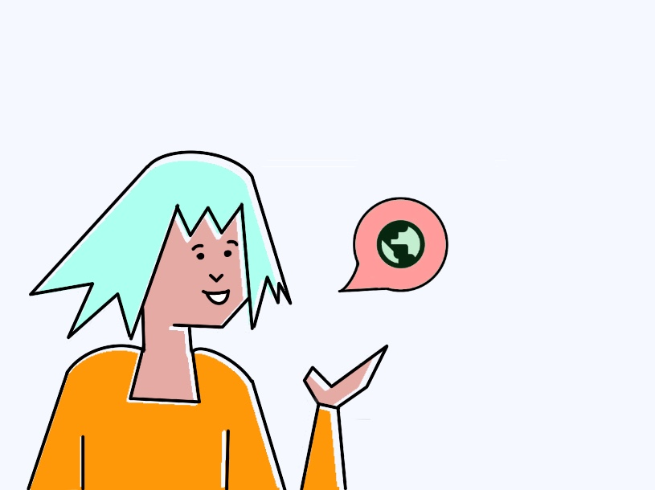
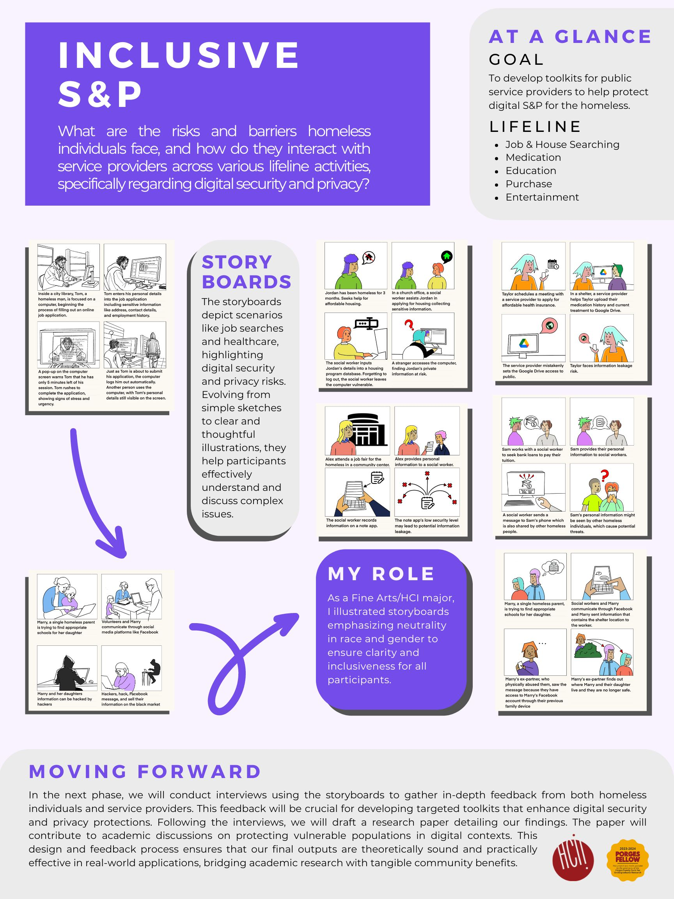

Inclusive S&P
What are the risks and barriers faced by homeless individuals, and how do they interact with service providers across various lifeline activities, specifically with regard to digital S&P? Goal: Develop some toolkits for public service providers to help them protect digital S&P for the homeless.
